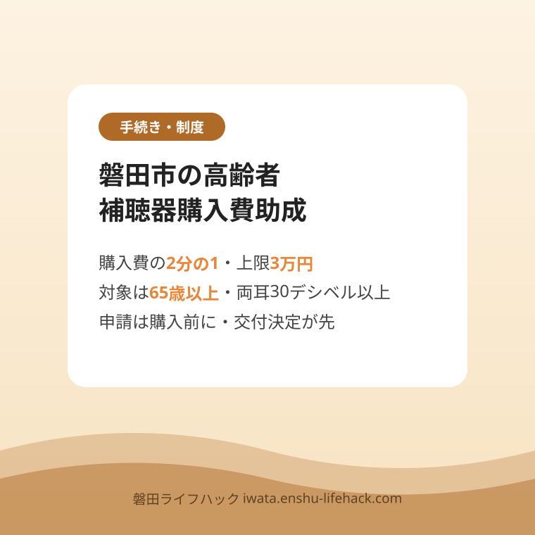

手続き・制度
磐田市の高齢者補聴器購入費助成｜65歳以上・両耳30デシベル以上が対象、購入費の2分の1・上限3万円で申請は購入前に

この記事の要点
Q. 磐田市の高齢者補聴器購入費助成は、誰が・いくら受けられますか？
A. 市内に住所がある65歳以上で、両耳の聴力レベル30デシベル以上・耳鼻咽喉科医師の証明など6要件を満たす方に、補聴器購入費の2分の1以内・上限3万円（1人1回限り）。交付決定前に購入すると対象外のため、申請は購入前に高齢者支援課（iプラザ3階）へ。
「テレビの音量が大きいと家族に言われる」「会話で聞き返すことが増えた」。聞こえの衰えは、少しずつ進むため、本人よりも周囲が先に気づくことが少なくありません。磐田市には、65歳以上の方の補聴器の購入費を助成する制度があります。「高齢者補聴器購入費助成事業」です。購入費の2分の1以内、上限3万円を市が助成します。
この記事では、磐田市が公表している案内チラシと申請書様式（高齢者支援課）を実際に開いて、対象者の要件・助成額・聞こえの目安・手続きの流れを確認しました。この制度でいちばん大切なのは順番です。助成金の交付決定を受ける前に買ってしまった補聴器は対象外になるため、「買う前に申請する」という流れを中心に整理します。
まず結論｜購入費の2分の1、上限3万円、1人1回限り
助成の内容は、補聴器の購入に要する経費の2分の1以内で、上限は30,000円です。対象は補聴器本体の購入費で、助成は1人につき1回限りとされています。
たとえば購入費が50,000円なら、その2分の1で25,000円が助成額の目安になります。購入費が80,000円なら2分の1は40,000円ですが、上限の30,000円で止まります。申請額は100円未満切り捨てで計算する形が、市の申請書の記入例にも示されています。
令和7年4月1日からは、対象年齢が「満70歳以上」から「満65歳以上」に引き下げられました。以前は対象外だった65歳から69歳の方も、いまは対象に含まれます。
そして、順番の注意がもう一つ。助成金交付決定前に購入した補聴器は助成対象外です。市のチラシにも大きく注意書きがあります。耳鼻咽喉科の受診と申請が、購入より先に来る制度だと覚えてください。
対象要件｜6つすべてを満たす方が対象です
対象になるには、市の定める要件をすべて満たす必要があります。第一に、市内に住所を有する65歳以上の方であることです。
第二に、両耳の聴力レベルが30デシベル以上で、耳鼻咽喉科医師により、補聴器の使用によって日常生活における聞き取りの改善が見込まれると判断された方であることです。聴力の数値だけでなく、医師の判断がセットになっています。
第三に、本人及び世帯全員の市民税所得割額が46万円未満であることです。所得の判定は本人だけでなく世帯全員が対象です。
第四に、本人及び世帯全員に市税等の滞納がないことです。第五に、その他の法令に基づき、補聴器購入費等の助成を受けていないことです。第六に、過去に本事業の助成を受けていないことです。「1人1回限り」という原則が、ここにも表れています。

聞こえの目安｜30デシベルは「聞き間違いが増える」段階
「両耳30デシベル以上」と言われても、自分の聞こえがどの段階かは分かりにくいものです。市のチラシには、難聴の度合いと聞こえ方の目安が示されています。
軽度難聴は30デシベル以上50デシベル未満で、聞き間違えや聞き返しをすることが増える段階です。この制度の入口である30デシベルは、まさにこの軽度難聴の始まりに当たります。
中等度難聴は50デシベル以上70デシベル未満で、日常会話が聞き取りにくくなります。高度難聴は70デシベル以上90デシベル未満で、耳元に口を近づけないと大声でも聞き取りにくい段階です。重度難聴は90デシベル以上で、ほとんど聞き取れません。
線引きとして大切なのは、70デシベル以上の場合です。市の案内では、原則として聴覚障害にかかる身体障害者手帳の交付対象とならない方がこの事業の対象で、70デシベル以上の場合は身体障害者手帳による助成を検討するよう示されています。聞こえの程度によって、使う制度が変わるということです。
手続きの流れ｜耳鼻咽喉科の受診から始めて、購入は決定の後
手続きは「購入する前」と「決定通知が届いた後」の二段構えです。最初のステップは耳鼻咽喉科の受診です。両耳の聴力レベルが30デシベル以上か検査し、補聴器で聞き取りの改善が見込まれると診断された場合に、申請書の「医師の証明」欄に証明を受けます。
医師の証明には有効な期間があります。申請日以前3か月以内のものである必要があり、3か月を過ぎている場合は再度証明を受けなければなりません。受診と申請の間を空けすぎないことが実務上の注意点です。
次に、販売店に相談して見積書を依頼します。補聴器の調整やフィッティングをして、購入したい補聴器が決まったら見積書をもらいます。市は購入時の相談のポイントとして、どのように使いたいか目的を伝えること、どんな時に聞こえにくいかを細かく伝えること、予算や価格を相談すること、一人で決めず家族などと相談することを挙げています。
そろったら、申請書（医師の証明を受けたもの）に見積書を添えて、磐田市高齢者支援課（iプラザ3階）へ提出します。電子申請も可能です。受付後、市が市民税所得割額や市税の滞納状況などを審査します。
審査を経て、市から本人宛に助成金交付の決定通知書が郵送されます。発送まで3週間程度かかるため、受診から購入までには時間の余裕を見ておく必要があります。
決定通知書が届いたら、見積書を取った販売店で補聴器を購入し、領収書を受け取ります。その後、請求書に領収書の写しと通帳の写しを添えて高齢者支援課へ提出すると、市から助成金が振り込まれます。振込通知は郵送されないため、通帳記帳などで自分で確認する形です。

窓口と問い合わせ先｜高齢者支援課（iプラザ3階）
申請書と請求書の提出先は、どちらも磐田市高齢者支援課（iプラザ3階）です。問い合わせは高齢者支援課、電話0538-37-4869、ファクス0538-37-6495と案内されています。
申請書は「高齢者補聴器購入費助成金交付申請書（様式第1号）」で、磐田市高齢者補聴器購入費助成金交付要綱第4条に基づいて提出する形です。申請にあたっては、助成対象者を含む世帯全員について、審査に必要な個人情報の確認を行うことへの同意が求められます。要件にある市民税所得割額や市税の状況は、この同意に基づいて確認されます。
記入例も市が用意しています。助成金申請額は「購入費の2分の1以内で30,000円が限度」「100円未満切り捨て」とされ、添付書類は購入を予定している補聴器の見積書です。医師の証明欄は耳鼻咽喉科の医療機関に記入してもらう欄で、申請者本人が書く欄ではありません。
良い点
良い点は3つあります。第一に、対象年齢が令和7年4月に70歳以上から65歳以上へ引き下げられ、対象が広がった点です。聞こえの衰えを感じ始める時期に近い年齢まで入口が下がりました。
第二に、入口の聴力レベルが30デシベル、つまり軽度難聴の始まりに置かれている点です。会話が成り立たなくなるまで待つのではなく、「聞き返しが増えた」段階で使える設計になっています。
第三に、手続きの全体像がチラシ1枚に流れとして示され、電子申請にも対応している点です。医師の証明の有効期間（3か月）や決定までの期間（3週間程度）まで書かれているため、予定を立てやすくなっています。
注文したい点
注文したい点もあります。まず、制度の案内が市の資料（チラシ・様式）中心で、制度の存在自体を知らないまま補聴器を買ってしまうと、後からでは助成を受けられない点です。「決定前に購入すると対象外」という条件は合理的ですが、購入の現場である販売店や耳鼻咽喉科で、この制度が一言案内されるかどうかで、使える人が大きく変わります。
また、所得要件が「本人及び世帯全員の市民税所得割額46万円未満」と世帯単位である点は、申請してみるまで自分が対象かどうか判断しにくいところです。目安となる世帯収入の例など、事前に当たりを付けられる情報があると、窓口への相談の心理的な壁は下がります。
さらに、助成は1人1回限りで上限3万円です。補聴器は両耳で購入すると価格が大きくなることもあります。1回限りの助成だからこそ、購入前のフィッティングや家族との相談を丁寧に進める案内が、金額の案内と同じくらい大切だと感じます。
対案・結論
対案として提案したいのは、耳鼻咽喉科と補聴器販売店へのチラシの常設です。聞こえの相談が発生する場所は、市の窓口ではなく医療機関と販売店です。その二つの現場に「磐田市では購入前に申請すると上限3万円の助成があります」という一枚があるだけで、制度は「買った後で知るもの」から「買う前に使えるもの」に変わります。
結論として、この制度の要点は金額よりも順番です。65歳以上で、市内に住所があり、両耳30デシベル以上で医師の改善見込みがあり、世帯の所得・市税の要件を満たす方。まず耳鼻咽喉科を受診し、見積書を取って申請し、決定通知が届いてから購入する。この順番さえ守れば、購入費の2分の1、上限3万円の助成を受けられます。
確認する順番
- 家族と「聞き返しが増えていないか」を話し、耳鼻咽喉科の受診日を決める
- 耳鼻咽喉科で両耳の聴力検査を受け、対象になりそうなら申請書の医師の証明欄に証明を受ける（証明は申請前3か月以内のもの）
- 販売店で使用目的や聞こえにくい場面を伝えてフィッティングし、見積書を依頼する
- 申請書に見積書を添えて高齢者支援課（iプラザ3階、電話0538-37-4869）へ提出する（電子申請も可）
- 交付決定通知書が届くまで購入を待つ（発送まで3週間程度）
- 決定後に見積書の販売店で購入し、領収書を受け取る
- 請求書に領収書の写しと通帳の写しを添えて提出し、通帳記帳で振込を確認する
身体障害者手帳の助成との違い｜70デシベルが分かれ目
補聴器の費用への公的な支えは、この事業だけではありません。聴覚障害の身体障害者手帳をお持ちの方には、手帳に基づく補装具費の支給という別の仕組みがあります。市のチラシは、この事業について「原則として聴覚障害にかかる身体障害者手帳の交付対象とならない方」を対象とし、70デシベル以上の場合は身体障害者手帳による助成を検討するよう明記しています。
つまり、この事業は手帳の対象にならない軽度・中等度の聞こえにくさを支える位置づけです。自分の聴力がどちらの入口に当たるかは、耳鼻咽喉科の検査結果が判断の出発点になります。まず検査を受け、医師や高齢者支援課に相談してから、進む制度を決めるのが確実です。
なお、この事業の助成を受けた方は、他の法令に基づく同様の助成との併用は想定されていません。要件にも「その他の法令に基づき補聴器購入費等の助成を受けていないこと」が明記されています。二つの制度を重ねて使うことはできない、という点も押さえておいてください。
大石の視点
聞こえにくさは、本人だけの問題ではありません。会話が減り、外出が減り、地域の集まりから足が遠のく。介護の現場でも、聞こえの衰えが孤立の入口になる場面を何度も見てきました。補聴器は、その入口を塞ぐための道具です。
この制度で私が評価したいのは、入口を軽度難聴の段階に置いたことです。「まだ大丈夫」と先延ばしにされがちな時期に、市の助成が背中を押す形になっています。年齢要件が65歳に下がったことも、その流れに沿っています。
一方で、制度は「知っている人」しか使えません。買ってから知っても取り返しがつかない条件だからこそ、耳鼻咽喉科と販売店という現場での案内が重要です。磐田市にこの制度があることを、聞こえに不安を感じ始めた一人でも多くの方と、そのご家族に知ってほしいと思います。
まとめ
磐田市の高齢者補聴器購入費助成事業は、65歳以上の市民の補聴器購入費の2分の1以内、上限3万円を助成する制度です。手続きは耳鼻咽喉科の受診から始まり、申請と交付決定を経てから購入する流れです。順番を守ることが、この制度を使うためのすべてと言っても過言ではありません。
- 助成額は購入費の2分の1以内・上限3万円、助成は1人につき1回限り
- 対象は65歳以上・市内在住・両耳30デシベル以上で医師の改善見込みがある方など6要件すべて
- 令和7年4月から対象年齢が70歳以上から65歳以上に引き下げられた
- 交付決定前に購入した補聴器は対象外。申請は高齢者支援課（iプラザ3階）へ、購入は決定通知の後に
参考にした公式情報
- 磐田市「高齢者への補聴器購入費助成のご案内（チラシ）」／磐田市高齢者支援課（対象者6要件・助成内容・難聴の目安・手続きの流れ7段階・問い合わせ先を2026年11月23日確認。令和7年4月1日から対象年齢が65歳以上に引き下げ）
- 高齢者補聴器購入費助成金交付申請書（様式第1号）／磐田市（交付要綱第4条に基づく申請書様式・医師の証明欄・添付書類を2026年11月23日確認）
- 高齢者補聴器購入費助成金交付申請書 記入例／磐田市（申請額は購入費の2分の1以内・上限30,000円・100円未満切り捨ての記入例を2026年11月23日確認）
最終確認日：2026-11-23 ／ 本記事は公表情報と執筆者の見解を分けて記載しています。制度・数値・公開状況は変更される場合があるため、最新情報は磐田市公式ページでご確認ください。